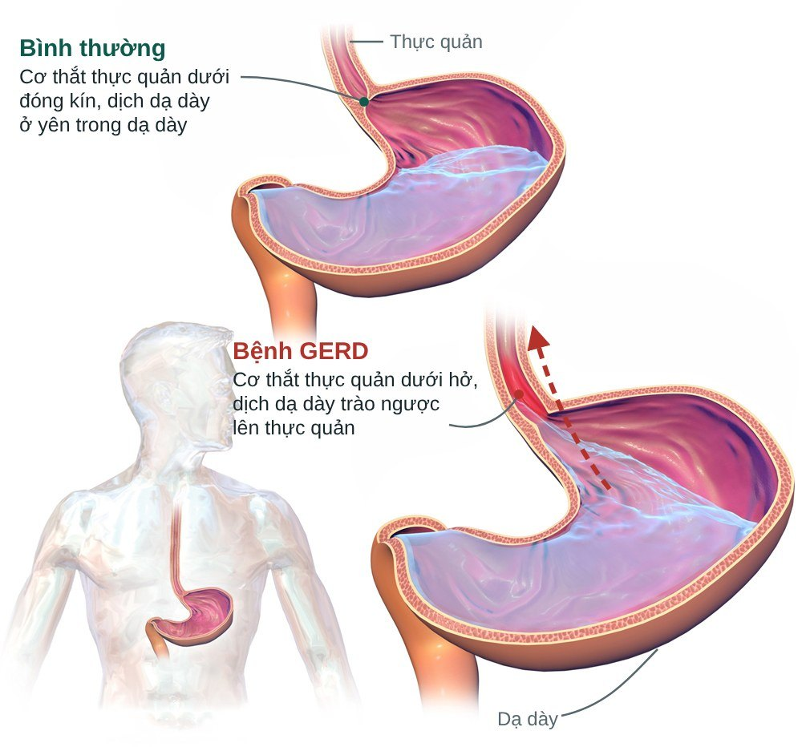
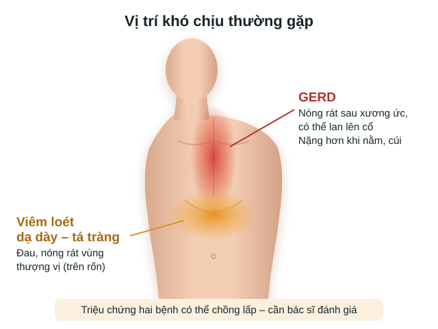

Ợ nóng, ợ chua, đau vùng thượng vị hoặc cảm giác vướng ở cổ họng là những than phiền thường gặp. Nhiều người gọi chung các triệu chứng này là “đau dạ dày”, nhưng trên thực tế chúng có thể xuất phát từ những bệnh lý khác nhau. Một trong những nguyên nhân phổ biến là bệnh trào ngược dạ dày – thực quản (GERD).
Nhận biết đúng GERD và phân biệt với viêm loét dạ dày – tá tràng giúp người bệnh tránh tự điều trị kéo dài, đồng thời phát hiện sớm những dấu hiệu cần thăm khám.
1. GERD là gì?
GERD (Gastroesophageal Reflux Disease) là tình trạng dịch trong dạ dày trào ngược lên thực quản, gây triệu chứng khó chịu và/hoặc biến chứng. Dịch trào ngược có thể chứa acid, pepsin và các thành phần khác.

Bình thường, cơ thắt thực quản dưới cùng với cơ hoành và cấu trúc vùng nối thực quản – dạ dày tạo thành hàng rào chống trào ngược. Khi hàng rào này hoạt động không hiệu quả, dịch dạ dày có thể đi ngược lên thực quản. Các yếu tố góp phần gồm giãn thoáng qua cơ thắt thực quản dưới, giảm trương lực cơ thắt, thoát vị khe hoành, tăng áp lực ổ bụng và rối loạn thanh thải thực quản.
Không phải mọi đợt trào ngược đều là bệnh. Trào ngược sinh lý có thể xảy ra sau ăn, nhưng GERD được xem là bệnh lý khi gây triệu chứng ảnh hưởng đáng kể đến cuộc sống hoặc gây tổn thương, biến chứng.
2. Triệu chứng thường gặp
Hai triệu chứng điển hình là:
Ợ nóng: cảm giác nóng rát sau xương ức, có thể lan từ thượng vị lên ngực hoặc cổ; thường tăng sau ăn, khi cúi người hoặc nằm xuống.
Ợ trớ: dịch hoặc thức ăn từ dạ dày trào lên họng/miệng, đôi khi có vị chua hoặc đắng.
Một số người có đau ngực không do tim. Ho kéo dài, khàn tiếng, cảm giác vướng họng, hen hoặc mòn răng cũng có thể được ghi nhận, nhưng các biểu hiện ngoài thực quản này không đặc hiệu. Không nên mặc định ho hoặc đau họng là do GERD nếu chưa đánh giá các nguyên nhân khác.
Đau ngực mới xuất hiện, dữ dội hoặc kèm khó thở, vã mồ hôi, choáng hay lan ra tay/hàm cần được cấp cứu để loại trừ bệnh tim mạch.
3. GERD khác viêm loét dạ dày – tá tràng như thế nào?
GERD chủ yếu liên quan đến sự trào ngược dịch dạ dày lên thực quản. Viêm loét dạ dày – tá tràng là tình trạng viêm hoặc khuyết niêm mạc dạ dày/tá tràng, thường liên quan đến Helicobacter pylori (H. pylori), thuốc kháng viêm không steroid (NSAID) và một số yếu tố khác.

Các đặc điểm gợi ý:
GERD: ợ nóng sau xương ức, ợ trớ, triệu chứng tăng khi nằm hoặc cúi người, đôi khi thức giấc ban đêm vì trào ngược.
Viêm loét dạ dày – tá tràng: đau hoặc nóng rát vùng thượng vị, đầy bụng, buồn nôn; mối liên quan với bữa ăn thay đổi tùy vị trí và đặc điểm ổ loét.
Cả hai bệnh đều có thể gây khó tiêu, buồn nôn hoặc đau vùng bụng trên. Chỉ dựa vào triệu chứng không phải lúc nào cũng phân biệt chắc chắn được.
GERD không đồng nghĩa với “tăng tiết acid”, và viêm loét dạ dày cũng không thể được xác định chỉ bằng cảm giác đau. Nội soi và xét nghiệm H. pylori được chỉ định tùy tuổi, triệu chứng, yếu tố nguy cơ và dấu hiệu cảnh báo.
4. Bác sĩ chẩn đoán GERD bằng cách nào?
Bác sĩ bắt đầu bằng khai thác kiểu triệu chứng, thời gian mắc bệnh, thuốc đang dùng, bệnh lý đi kèm và các dấu hiệu báo động. Bộ câu hỏi như GerdQ có thể hỗ trợ đánh giá triệu chứng, nhưng không đủ để xác định chắc chắn GERD. Đáp ứng với thuốc ức chế bơm proton (PPI) cũng không phải bằng chứng chẩn đoán tuyệt đối.
Nội soi tiêu hóa trên được cân nhắc khi có dấu hiệu báo động, triệu chứng dai dẳng không đáp ứng điều trị hoặc trước khi xem xét can thiệp. Nội soi có thể phát hiện viêm thực quản, hẹp, Barrett thực quản và bệnh lý khác; nội soi bình thường không loại trừ GERD.
Đo pH thực quản hoặc pH – trở kháng 24 giờ được sử dụng trong những trường hợp cần bằng chứng khách quan, đặc biệt khi triệu chứng dai dẳng, nội soi bình thường/viêm nhẹ hoặc đang cân nhắc phẫu thuật. Đo áp lực thực quản độ phân giải cao (HRM) giúp đánh giá vận động thực quản và loại trừ một số rối loạn trước can thiệp.
Đọc thêm: chế độ ăn cho người bị trào ngược dạ dày – thực quản · các thuốc điều trị GERD và cách sử dụng an toàn
5. Khi nào cần đi khám?
Hãy đi khám sớm nếu có nuốt nghẹn, nuốt đau, nôn kéo dài, sụt cân không chủ ý, thiếu máu, nôn ra máu hoặc đi ngoài phân đen. Đây là những dấu hiệu cần được đánh giá, thường bao gồm nội soi theo chỉ định.
Nếu triệu chứng ợ nóng/ợ trớ tái diễn, ảnh hưởng giấc ngủ hoặc sinh hoạt, người bệnh nên trao đổi với bác sĩ thay vì tự dùng thuốc kéo dài. Người có triệu chứng mới xuất hiện ở tuổi lớn hơn, tiền sử gia đình Barrett/ung thư thực quản hoặc nhiều yếu tố nguy cơ cũng cần được đánh giá cá thể hóa.
Đọc thêm: nguyên nhân khiến GERD dai dẳng hoặc khó kiểm soát · Barrett thực quản – biến chứng cần theo dõi của GERD
Câu hỏi thường gặp
GERD là bệnh gì?
GERD là bệnh trào ngược dạ dày – thực quản, xảy ra khi dịch dạ dày trào ngược gây triệu chứng khó chịu hoặc biến chứng.
Ợ nóng có phải luôn là GERD?
Ợ nóng là triệu chứng điển hình nhưng không đủ để tự xác định bệnh. Bác sĩ cần đánh giá bệnh sử, dấu hiệu cảnh báo và chỉ định thăm dò khi cần.
GERD khác viêm loét dạ dày như thế nào?
GERD chủ yếu gây trào ngược lên thực quản; viêm loét dạ dày – tá tràng liên quan tổn thương niêm mạc dạ dày hoặc tá tràng. Triệu chứng có thể chồng lấp.
Tài liệu tham khảo
Hội Khoa học Tiêu hóa Việt Nam. Hướng dẫn chẩn đoán và điều trị bệnh trào ngược dạ dày – thực quản. 2025.
Katz PO, et al. ACG Clinical Guideline for the Diagnosis and Management of Gastroesophageal Reflux Disease. Am J Gastroenterol. 2022.
Gyawali CP, et al. Updates to the modern diagnosis of GERD: Lyon Consensus 2.0. Gut. 2024.
Lưu ý y khoa: Bài viết cung cấp thông tin giáo dục sức khỏe, không thay thế thăm khám, chẩn đoán hoặc điều trị cá nhân. Người đọc cần trao đổi với nhân viên y tế trước khi thay đổi thuốc hoặc kế hoạch điều trị.